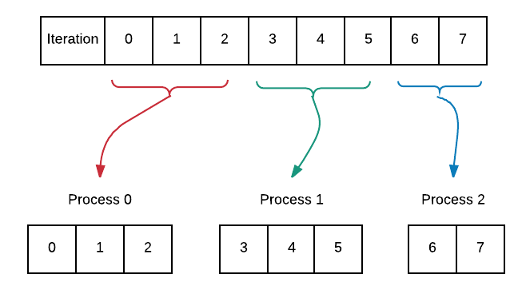
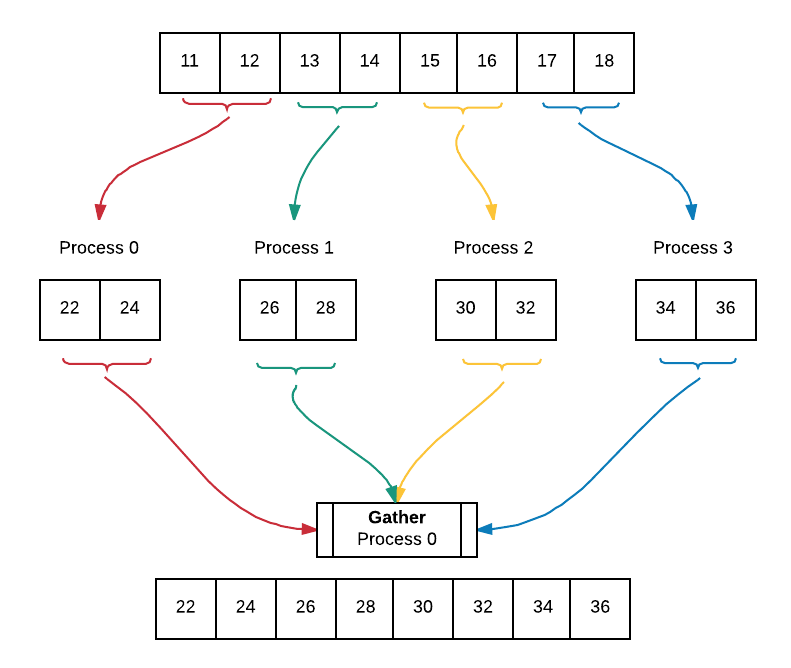

Advanced Topics¶
20. Advanced Data Decomposition: on equal-sized chunks using parallel-for¶
file: patternlets/MPI/20.parallelLoopAdvanced/parallelLoopChunks.c
Build inside 20.parallelLoopAdvanced directory:
make parallelLoopChunks
Execute on the command line inside 20.parallelLoopAdvanced directory:
mpirun -np <number of processes> ./parallelLoopChunks
This example is a continuation of example 2 which showed data decomposition on equal-sized chunks using parallel-for. Recall that the program only ran correctly when the work was equally divisible among the processes. We will delve into how to approach situations in which the chunks of work are not always the same size. We are able to do this by equally distributing chunks of work that differ by no more than one in size among the processes. The diagram below illustrates this concept with 8 iterations assigned to 3 processes.
To do:
Compile and run the code varying the number of processes from 1 through 8. What do you notice about the how the iterations of the loop are divided among the processes? Can you explain this in terms of chunkSize1 and chunkSize2?
1 2 3 4 5 6 7 8 9 10 11 12 13 14 15 16 17 18 19 20 21 22 23 24 25 26 27 28 29 30 31 32 33 34 35 36 37 38 39 40 41 42 43 44 45 46 47 48 49 50 51 52 53 54 55 56 57 58 59 60 61 62 63 64 | /* parallelLoopChunks.c
*
* illustrates the parallel for loop pattern in MPI
* in which processes perform the loop's iterations in 'chunks'
* whose size differs by at most 1 (useful when iterations is not divisible
* by the number of processes)
*
* by Libby Shoop, Macalester College, July 2017
*
* Usage: mpirun -np N ./parallelForChunks
*
* Exercise:
* - Compile and run, varying N: 1, 2, 3, 4, 5, 6, 7, 8
* - Change REPS to 16, save, recompile, rerun, varying N again.
* - Explain how this pattern divides the iterations of the loop
* among the processes.
*/
#include <stdio.h> // printf()
#include <mpi.h> // MPI
#include <math.h> // ceil()
int main(int argc, char** argv) {
const int REPS = 8;
int id = -1, numProcesses = -1,
start = -1, stop = -1;
MPI_Init(&argc, &argv);
MPI_Comm_rank(MPI_COMM_WORLD, &id);
MPI_Comm_size(MPI_COMM_WORLD, &numProcesses);
if (numProcesses > REPS) {
if (id == 0) {
printf("Please run with -np less than or equal to %d\n.", REPS);
}
} else {
// find chunk size for part of processes
int chunkSize1 = (int)ceil(((double)REPS) / numProcesses);
// chunk size to spread among rest of processes
int chunkSize2 = chunkSize1 - 1;
int remainder = REPS % numProcesses;
// When remainder is 0, we have equal-sized chunks for all processes.
// When remainder is not zero and the process id is lower than remainder,
// we use the higher chunk size.
if (remainder == 0 || (remainder !=0 && id < remainder)) {
start = id * chunkSize1;
stop = start + chunkSize1;
} else {
// decrease chunk size by one to spread out across remaining
// processes whose id is >= remainder
start = (remainder * chunkSize1) + (chunkSize2 * (id - remainder));
stop = start + chunkSize2;
}
for (int i = start; i < stop; i++) { // iterate through our range
printf("Process %d is performing iteration %d\n", id, i);
}
}
MPI_Finalize();
return 0;
}
|
21. Advanced Broadcast and Data Decomposition¶
file: patternlets/MPI/21.broadcast+ParallelLoop/broadcastLoop.c
Build inside 21.broadcast+ParallelLoop directory:
make broadcastLoop
Execute on the command line inside 21.broadcast+ParallelLoop directory:
mpirun -np <number of processes> ./broadcastLoop
We once again expand upon example 2 on data decomposition using parallel-for loop with equal-sized chunks to incorporate broadcast and gather. We begin by filling an array with values and broadcasting this array to all processes. Afterwards, each process works on their portion of the array which has been determined by the equal sized chunks data decomposition pattern. Lastly, all of the worked on portions of the array are gathered into an array containing the final result. Below is a diagram of the code executing using 4 processes. The diagram assumes that we have already broadcast the filled array to all processes.
Note that we chose to keep the original array, array, intact. Each process allocates memory, myChunk to store their worked on portion of the array. Later, the worked on portions from all processes are gathered into a final result array, gatherArray. This way of working on array is useful in instances in which we want to be able to access the initial array after working on it.
1 2 3 4 5 6 7 8 9 10 11 12 13 14 15 16 17 18 19 20 21 22 23 24 25 26 27 28 29 30 31 32 33 34 35 36 37 38 39 40 41 42 43 44 45 46 47 48 49 50 51 52 53 54 55 56 57 58 59 60 61 62 63 64 65 66 67 68 69 70 71 72 73 74 75 76 77 78 79 80 81 82 83 84 85 86 87 88 89 90 91 92 93 94 95 96 97 98 99 100 101 102 103 104 105 106 107 108 109 110 111 112 113 114 115 116 117 118 119 120 121 122 123 124 125 126 127 128 129 130 131 132 133 134 135 136 137 138 139 140 141 142 143 144 145 146 147 148 | /* broadcastLoop.c
* ... illustrates the use of MPI_Bcast() for arrays
* combined with data decomposition pattern using a parallel-for loop with
* equal chunks. Wraps up with a gather so that completed work is back in
* master process.
*
* Libby Shoop, Macalester College, July, 2017
*
* Usage: mpirun -np N ./broadcastLoop
*
* Exercise:
* - Compile and run, using 2, 4, and 8 processes
* - Use source code to trace execution and output
* - Explain behavior/effect of MPI_Bcast(), MPI_Gather().
* - optional: change MAX to be another multiple of 8, such as 16
*/
#include <mpi.h>
#include <stdio.h>
#include <stdlib.h>
/* fill an array with some arbitrary values
* @param: a, an int*.
* @param: size, an int.
* Precondition: a is the address of an array of ints.
* && size is the number of ints a can hold.
* Postcondition: a has been filled with arbitrary values
* { 11, 12, 13, ... }.
*/
void fill(int* a, int size) {
int i;
for (i = 0; i < size; i++) {
a[i] = i+11;
}
}
/*
* Perform the data decomposition pattern on chunk of the array.
*
* @param: reps, number of repetions to traverse array
* @param: numProcesses, total number of processes being used
* @param: id, the rank, or id of current process executing this function
* @param: array, the array of integers whose chunk this process will work on.
* @param: myChunk, a smaller array that will contain the complated work
*
* This function will work on a portion of the array by doubling the value
* at each index in the array that this process id is responsible for.
* The original array is intact and the work done is stored in a smaller
* array, myChunk.
*
* preconditions:
* reps is divisible by numProcesses to ensure equal chunks
* size of myChunk is reps/numProcesses
* postconditions:
* array is unchanged
* myChunk contains completed work
*/
void workOnChunk(int reps, int numProcesses, int id, int* array, int* myChunk) {
int chunkSize = reps / numProcesses; // find chunk size
int start = id * chunkSize; // find starting index
int stop = start + chunkSize; // find stopping index
int chunkIndex = 0;
for (int i = start; i < stop; i++) { // iterate through our range
printf("Process %d is performing iteration %d\n", id, i);
// perform calculation, leaving original array intact and updating
// local chunk with result.
myChunk[chunkIndex] = array[i] *2;
chunkIndex++;
}
}
/* display a string, a process id, and its array values
* @param: str, a char*
* @param: id, an int
* @param: a, an int*.
* Precondition: str points to a string to describe this array being printed
* && id is the rank of this MPI process
* && a is the address of an int array with numElements.
* Postcondition: str, id, and a have all been written to stdout.
*/
void print(char* str, int id, int* a, int numElements) {
printf("%s , process %d has: {", str, id);
for (int i = 0; i < numElements - 1; i++) {
printf("%d, ", a[i]);
}
printf("%d}\n", a[numElements - 1]);
}
#define MAX 8
/*
* Main program that double the values in an array by dividing the work
* equally among processes.
*/
int main(int argc, char** argv) {
int array[MAX] = {0};
int* myChunk;
int* gatherArray;
int numProcs, myRank;
MPI_Init(&argc, &argv);
MPI_Comm_size(MPI_COMM_WORLD, &numProcs);
MPI_Comm_rank(MPI_COMM_WORLD, &myRank);
// need conditions for equal-sized chunks
if ((MAX % numProcs) == 0 && numProcs <= MAX) {
if (myRank == 0) { // master:
fill(array, MAX); // populates original array
gatherArray = (int*) malloc( MAX * sizeof(int) ); // allocates result array
}
print("BEFORE Bcast", myRank, array, MAX);
MPI_Bcast(array, MAX, MPI_INT, 0, MPI_COMM_WORLD);
print("AFTER Bcast", myRank, array, MAX);
myChunk = (int*) malloc(MAX/numProcs * sizeof(int)); // holds my work
workOnChunk(MAX, numProcs, myRank, array, myChunk);
print("AFTER doubling", myRank, array, MAX); //array should not change
MPI_Barrier(MPI_COMM_WORLD); // ensure all are finished
MPI_Gather(myChunk, MAX/numProcs, MPI_INT, // gather chunk vals
gatherArray, MAX/numProcs, MPI_INT, // into gatherArray
0, MPI_COMM_WORLD);
if (myRank == 0) { // master has all completed work after gather:
print("in gatherArray, AFTER gather", myRank, gatherArray, MAX);
free(gatherArray); //clean up
}
} else { // bail if not equal-sized chunks
if (myRank == 0) {
printf("Please run with -np divisible by and less than or equal to %d\n.", MAX);
}
}
free(myChunk); // clean up
MPI_Finalize();
return 0;
}
|

{kind=link}
{kind=link}